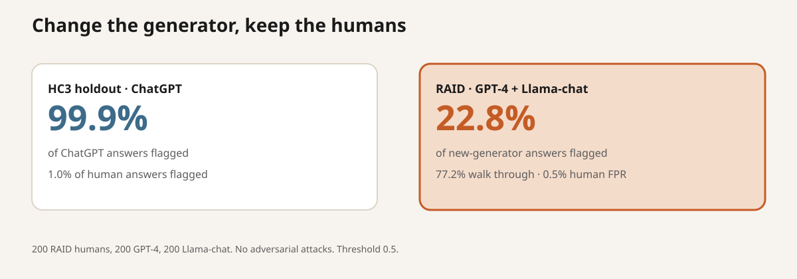
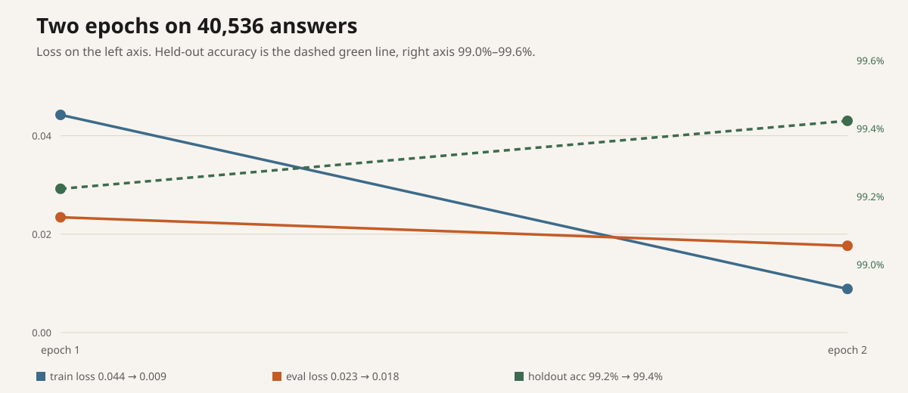
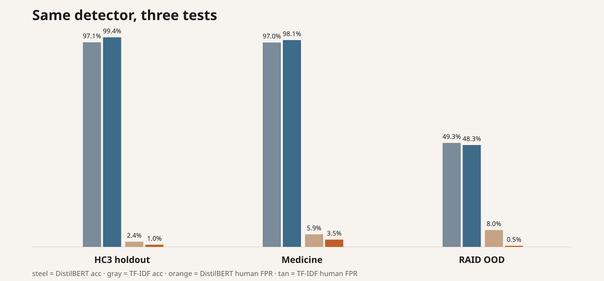

Radiation is defined as waves or particles emitted from an atom as it moves from a higher energy state to a lower energy state. This comes in several forms: heat, light, beta…
2026-09-12 · post #6
A $0.38 AI-text detector
It looks like a product on ChatGPT answers. Change the generator and it falls apart.
We trained a small classifier on Compute that reads an answer and says human or AI. On 4,502 held-out HC3 answers it scores 99.4% and flags 1.0% of the human text. On a 600-row RAID slice — GPT-4, Llama-chat, and human, none of it ChatGPT — accuracy is 48%. The headline GPU run cost $0.30. The whole issue was $0.38.
- HC3 accuracy
- 99.4%
- Human false positives
- 1.0%
- RAID accuracy
- 48.3%
- Issue spend
- $0.38

Human or ChatGPT, on purpose
This is not a Pangram alternative. Pangram is a product that has to survive new models, new prompts, and people who will try to fool it. This is a two-evening classifier on a 2023 ChatGPT corpus, plus one honest out-of-distribution check.
The training set is Hello-SimpleAI/HC3 English: 23,763 usable questions after dropping short answers, each with one human answer and one ChatGPT answer. The job downloads that on the machine. You do not upload it.
We split by question, not by answer, so a ChatGPT reply never sits in training while its human twin sits in test. Medicine is held out entirely — same generator, new domain. 20,268 questions stay for training, 2,251 for the in-distribution holdout, 1,244 for medicine.
A laptop baseline, then DistilBERT
Two classifiers, same labels, same splits:
- TF-IDF (1–2 grams, 50k features) plus logistic regression.
- DistilBERT (
distilbert-base-uncased, 66,955,010 parameters) with a two-class head.
Loss is class-weighted cross-entropy. Accuracy is reported. The number that matters is the false-positive rate on human text: how often a person gets called a machine.

Easy on ChatGPT, then a coin flip
Headline run run_ea7b0d5c56f928808c3096a232e3e0bd on a RunPod A100-SXM 80GB. DistilBERT beats TF-IDF on the HC3 holdout and on medicine. Both collapse on RAID.
| Split | Model | Accuracy | Human FPR | AI recall |
|---|---|---|---|---|
| HC3 holdout | TF-IDF | 97.1% | 2.4% | 96.6% |
| HC3 holdout | DistilBERT | 99.4% | 1.0% | 99.9% |
| Medicine | TF-IDF | 97.0% | 5.9% | 99.9% |
| Medicine | DistilBERT | 98.1% | 3.5% | 99.7% |
| RAID OOD | TF-IDF | 49.3% | 8.0% | 28.0% |
| RAID OOD | DistilBERT | 48.3% | 0.5% | 22.8% |

Medicine still works because it is still ChatGPT. RAID does not, because GPT-4 and Llama are not the 2023 ChatGPT that wrote HC3. DistilBERT’s RAID accuracy is slightly worse than TF-IDF. It is also much less willing to accuse a human. That is the trade a detector actually has to make, and it loses on this slice.
What it still gets wrong on HC3
These are the examples the run printed from the in-distribution holdout: three humans it called AI, and three ChatGPT answers it let through.
Flo is a fictional character who appears in commercials for Progressive Insurance. She is played by actress and comedian Stephanie Courtney…
Bitcoin is much like a digital form of gold. In order to mine gold, you need to spend time and money to collect the ore and refine it…
If the underlying stays below the strike price, the put option will not be exercised and will expire worthless. This means that the value of the put option will be zero.
No, the Earth is not getting bigger. The Earth is made up of solid rock, and while the surface of the Earth can change over time…
Why can't poor countries just print more money
The false positives are tidy encyclopedia sentences. The misses are short, or they look like a question that leaked into the answer field. HC3 is not a clean product dataset. The 99.4% is agreement with that dataset, including its mess.
Train it on Compute
One file. Hand compute.cx/SKILL.md to your agent, plus the specials in this post’s overlay.
curl -fsSL https://raw.githubusercontent.com/theoriclabs/letsusecompute/main/posts/ai-text-detector/train.py -o train.py
curl -fsSL https://compute.cx/install.sh | sh
compute setup
compute credits add 10
compute run train.py::train --gpu cheap --dry-run
compute run train.py::train --provider runpod --gpu A100-PCIe-80GB --timeout 2400 --waitDry-run only prints the upload plan. The real command quotes a GPU before spend. --gpu cheap is the issue default. On this account it quoted the decorator SKU and Vast had no interruptible offers, so the sample ran on RunPod A100-PCIe and the headline on A100-SXM. A short sample is enough to check the metric code first:
compute run train.py::train --provider runpod --gpu A100-PCIe-80GB --timeout 2400 --wait --args '{"max_train": 2000, "max_eval": 400, "epochs": 1, "ood_per_model": 40, "ood_scan": 20000}'Want to read the script? train.py.
The weights landed this time
Sample run run_3eaf70692b424b122f8656610c28d501 cost $0.08. Headline run run_ea7b0d5c56f928808c3096a232e3e0bd billed 9 minutes of training and 1 minute of boot, $0.30. Both returned ok: true and both persisted a five-file artifact — detector.pt is the classification head, not the full 250MB DistilBERT folder. There is no Hub checkpoint. No hf secret was set.
Reports: rpt_1f125aff10b2f5922cf0cb077d8b4eeb (cheap quoted Vast RTX-3090, no interruptible offers), rpt_49171d9a8d52914e5af23341cb798aea (same after switching the decorator to RTX-6000-ADA, which the catalog marked available), rpt_b1c5888080691f47853bbab6fd1b4d2b and rpt_4daac4e75ba231e1857f282495c32549 (two RunPod A100-PCIe creates returned HTTP 500 after the sample had succeeded on that SKU).
If artifacts land on your run:
compute artifacts list <run_id>
compute artifacts get <run_id> <artifact_id> <version> --out ./weightsStoring a Hugging Face token does not put it on the machine. Secret.from_name("hf") on train_and_push does.
compute secrets set hf
compute run train.py::train_and_push --provider runpod --gpu A100-PCIe-80GB --timeout 2400 --waitWhat this does not claim
It does not detect “AI text” in general. It detects 2023 ChatGPT answers that look like HC3, and it does that very well. It does not locate a generator, attribute a document to a person, or survive paraphrases, decoding tricks, or models released after the training data. RAID here is 600 streamed rows, not the full benchmark. Medicine is still ChatGPT. The false-positive rate is the number that would matter in a classroom or a newsroom, and 1% of 2,251 held-out humans is still 23 people.
That is as far as $0.38 got us from Pangram.